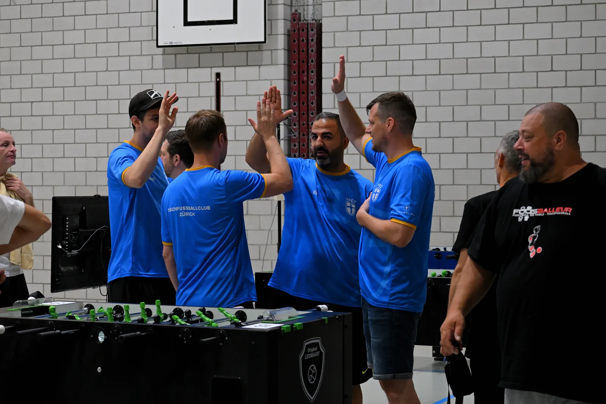
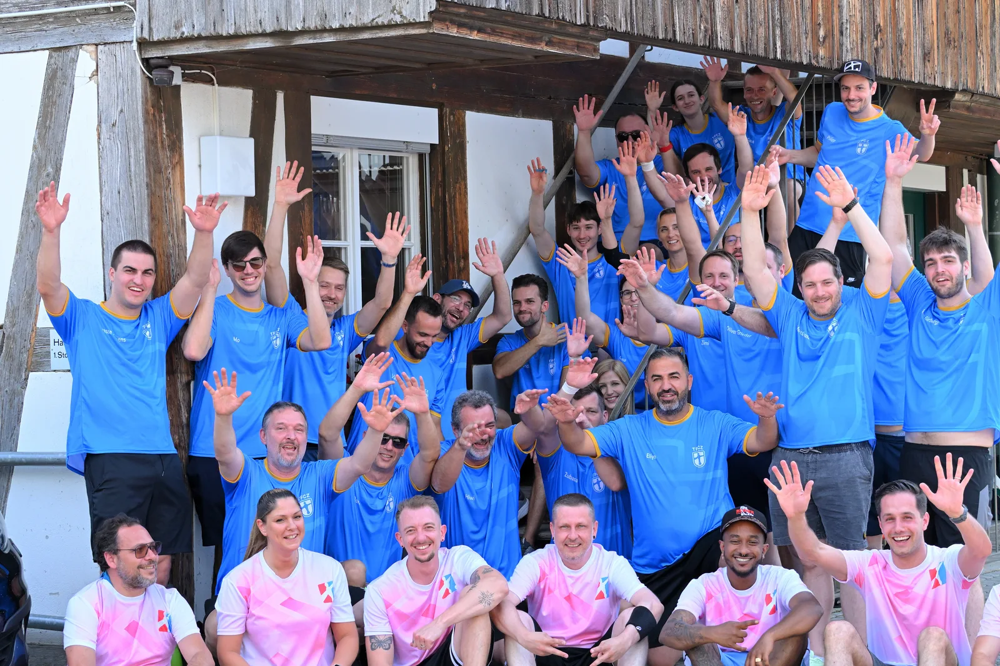
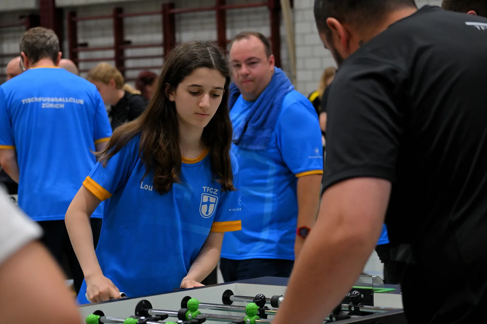
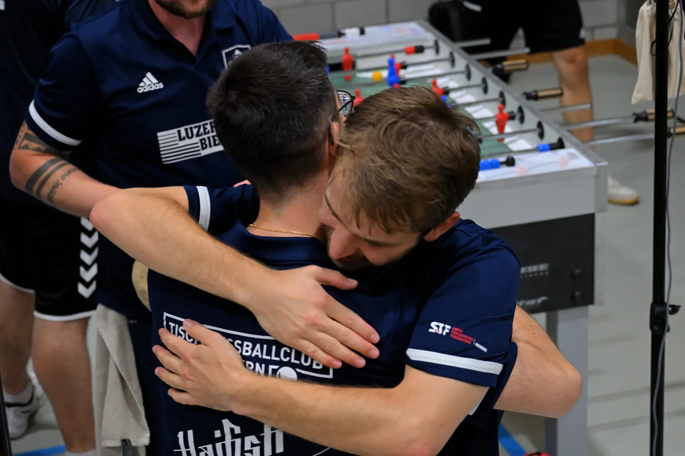
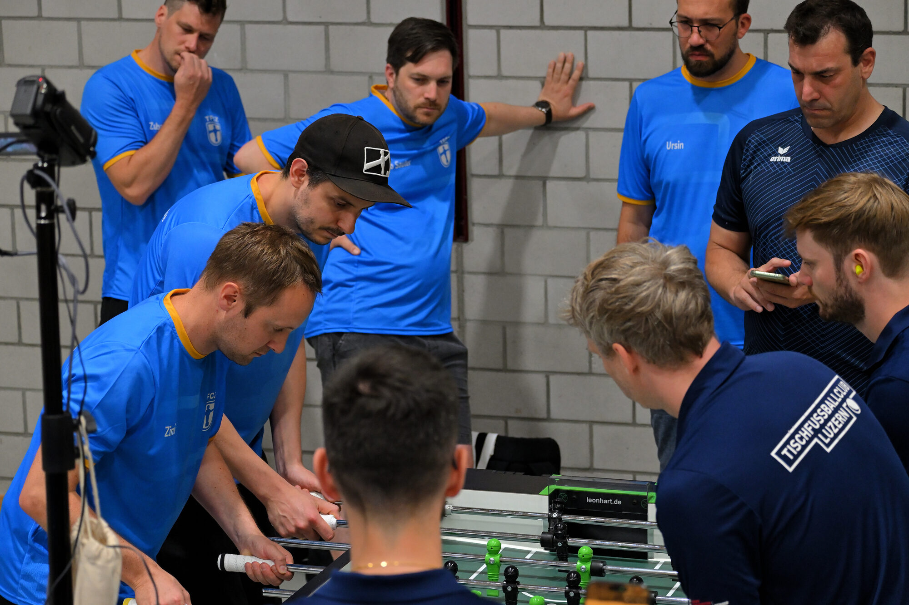
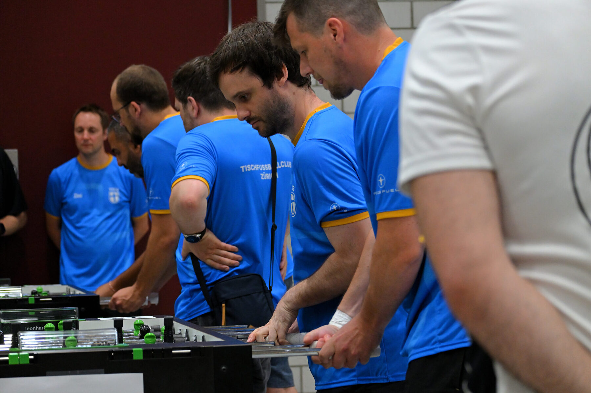
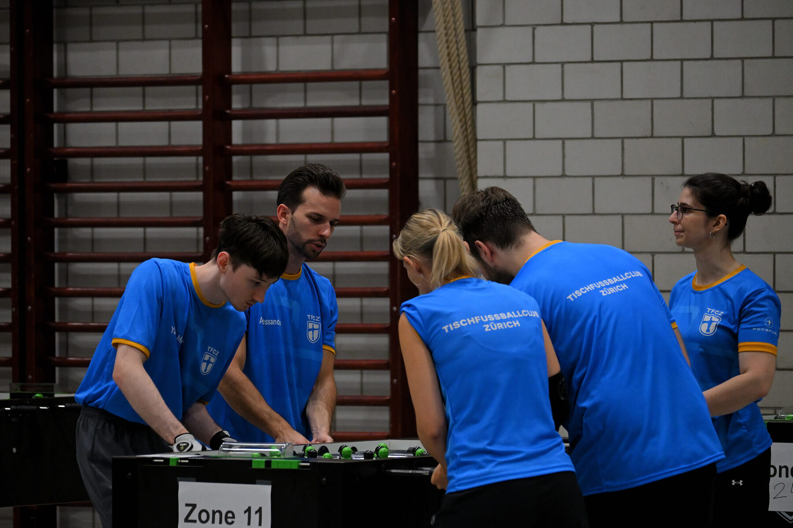
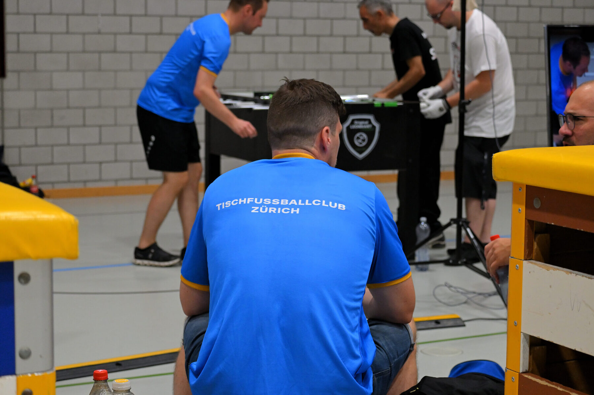
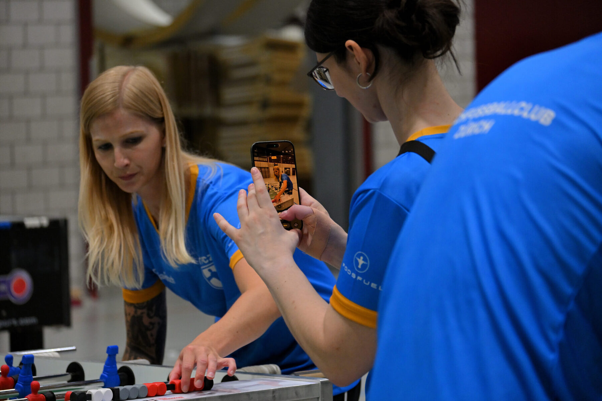

Ein Verein. Eine grosse Familie.Ei Veräi. E grossi Familia.
Der Tischfussball Club Zürich ist der grösste Profi-Tischfussball-Verein der Schweiz — und trotzdem der Ort, an dem man zum ersten Mal an den Tisch steht. Seit 1990 in Wipkingen, getragen von Freiwilligen, offen für alle.Där Tischfuässball Club Züri isch där gröschte Profi-Tischfuässball-Veräi va dr Schwiiz — und trotzdäm dr Ort, wo mu ds erschte Mal am Tisch steit. Sit 1990 z Wipkingu, treid va de Freiwilligu, offä für alli.
Seit 1990 am selben OrtSit 1990 am gliichu Ort
Der TFCZ spielt seit über drei Jahrzehnten am selben Standort an der Landenbergstrasse 10 in Zürich-Wipkingen. In unserer Halle haben Schweizermeister, Nationalspieler, Bundesliga- und Weltmeistertitel-Gewinner ihr Handwerk gelernt — und daneben Menschen, die noch nie eine Stange in der Hand hatten.Där TFCZ spilt sit über drü Jahrzähnt am gliichu Ort a där Landenbergstrass 10 z Züri-Wipkingu. In iisru Halla hei Schwiizermeischter, Nationalspiler, Bundesliga- und Wältmeischter ir Handwärch glärnt — und dernäbu Litt, wo no niä ä Stangu i dr Hand ghäbt hei.
Seit 2025 ist der Leonhart unser Haupttisch: Mit zehn permanenten Leonhart-Turniertischen sind wir heute das Zuhause des Schweizer Spitzen-Tischfussballs. Gleichzeitig ist der erste Abend bei uns gratis. Genau dieser Spagat — Weltspitze und Neulinge am gleichen Tisch — macht uns aus.Sit 2025 isch där Leonhart iisu Haupttisch: Mit zäni permanänte Leonhart-Turniertische sy mir hita ds Dähei vam Schwiizer Spitze-Tischfuässball. Gliichzitig isch dr erschte Aabu bi iis gratis. Genau dää Spagat — Wältspitza und Näulinge am gliichu Tisch — macht iis üs.
Mehr zur Herkunft des Sports: Die Geschichte des Tischfussballs →Meh zur Herkunft vam Sport: D Gschicht vam Tischfuässball →

Wir bringen den Sport auf den ScreenMir bringu dr Sport uf dr Screen
Tischfussball ist schnell, laut und emotional — das gehört gesehen. Bei jedem grossen Turnier bauen wir ein kleines TV-Studio auf und streamen live auf YouTube: mit mehreren Kameras, Kommentatoren, Lower-Thirds, Spieluhr und Resultat-Grafiken.Tischfuässball isch schnäll, lut und emotional — das ghört gseh. Bi jedum grossu Turnier büüwu mir äs chliis TV-Studio uf und streamu live uf YouTube: mit mehreru Kameras, Kommentatore, Lower-Thirds, Spiäluhr und Resultat-Grafike.
Eigene SoftwareÄigäni Software
Wir haben ein selbst gebautes Livestudio- & Overlay-System (OBS-Steuerpult mit Live-Vorschau), das die Grafiken, Sätze und Szenen in Echtzeit steuert — vom Interview-Insert bis zum Sponsorenbanner.Mir hei äs sälber büüts Livestudio- & Overlay-System (OBS-Stüürpult mit Live-Vorschau), wo d Grafike, Sätz und Szene i Echtziit stüürt — vam Interview-Insert bis zum Sponsorebanner.
Voll produziertVoll produziert
Kamera, Ton, Kommentar und Grafik greifen ineinander. So wird aus einem Turniertag eine Übertragung, die man auch von zu Hause verfolgen kann.Kamera, Ton, Kommentar und Grafik griffu inenand. So wird üs eimu Turniertag ä Übertragung, wo mu ou va dähei cha mitverfolgu.
Was wir wollenWas mir wei
Wir wollen den Tischfussball sichtbar machen — die Szene wachsen lassen, neue Leute anstecken und dem Sport die Bühne geben, die er verdient.Mir wei dr Tischfuässball sichtbar machu — d Szene la wachsu, näi Litt aschtecku und am Sport d Büüni gäh, wo är verdiänt.
Was uns verbindet: die Fordere-LigaWas iis verbindet: d Fordere-Liga
Tischfussball lebt nicht nur im Verein, sondern auch in den Bars der Stadt — genau da setzt Fordere Zürich an.Tischfuässball läbt nid nu im Veräi, sondern ou i de Barä va dr Stadt — genau da setzt Fordere Züri a.
Über rund fünf Monate fordern sich Teams in ihren Stammbars quer durch Zürich heraus — organisiert vom Verein fordere.ch, der die Liga über seine Plattform, die Table-Soccer-App und einen Newsletter am Laufen hält. So ist eine der lebendigsten Breiten-Bewegungen des Schweizer Tischfussballs entstanden. Grosse Anerkennung an Fordere Zürich — sie bringen den Sport niederschwellig und mit viel Herzblut zu den Menschen.Über öppa füüf Mönät forderu sich Teams i ire Stammbarä quer dür Züri usä — organisiärt vam Veräi fordere.ch, wo d Liga über sy Plattform, d Table-Soccer-App und ä Newsletter am Laufu haltet. So isch eini va de läbändigschtu Breite-Bewegige vam Schwiizer Tischfuässball entschtandu. Grossi Anerkennig a Fordere Züri — si bringu dr Sport niäderschwellig und mit viil Herzbluät zu de Litt.
Was uns verbindet, ist genau diese Liga von fordere.ch: Wir unterstützen, was Fordere macht, und leben es mit. Gespielt wird in den Bars, aber ein grosser Teil läuft auch bei uns im TFCZ — viele Partien werden direkt in unserer Halle ausgetragen. So wächst zusammen, was zusammengehört: Barszene und Verein.Was iis verbindet, isch genau die Liga va fordere.ch: Mir unterstützu, was Fordere macht, und läbu es mit. Gspilt wird i de Barä, aber ä grosse Teil lauft ou bi iis im TFCZ — viili Partiä wärdu diräkt i iisru Halla üsträit. So wachst zäme, was zämeghört: Barszene und Veräi.

Dieses Gruppenfoto ist an der Clubliga entstanden — TFCZ in Blau und Fordere Zürich in Pink, Seite an Seite.Das Gruppäfoto isch a dr Clubliga entschtandu — TFCZ i Blau und Fordere Züri i Pink, Sita a Sita.
Ein Moment, der zeigt, wie eng Verein und Barszene zusammengehören — genau das, was die Fordere-Liga jede Saison lebendig macht.Ä Momänt, wo zeigt, wiä äng Veräi und Barszene zämeghöru — genau das, was d Fordere-Liga jedi Saison läbändig macht.
Unsere GetränkelisteIisi Getränkliste Vorlage
An der Bar gibt es Kaltes, Warmes und Kleines für den Hunger zwischendurch — im Rahmen unserer Vereinsaktivitäten. Preise & Angebot folgen (diese Liste ist eine Vorlage zum Ausfüllen).A dr Bar gits Chalts, Warms und Chliis für dr Hunger zwüschudüri — im Rahmu va iisru Vereinsaktivitätu. Priise & Angäbot chömu no (die Liste isch ä Vorlag zum Üsfülu).
Zahlung per Karte / Twint · kein Bargeld an Turnieren. Nenn mir die Preise & das Sortiment, dann fülle ich die Liste final aus.Zahlig per Karta / Twint · käs Bargäld a Turnier. Säg mir d Priise & ds Sortimänt, dennu fülu ich d Liste fertig üs.

Dabei im Ferienprogramm der Stadt ZürichDebii im Feriäprogramm va dr Stadt Züri
Wir sind Teil des Ferienangebots der Stadt Zürich: In den Schulferien organisieren wir Tischfussball-Kurse für Kinder und Jugendliche — über das Sportamt der Stadt Zürich (Ferienplausch / Ferienkurse). Für viele ist das der erste Kontakt mit dem Sport: spielerisch, betreut und mit ganz viel Spass.Mir sy Teil vam Feriäangäbot va dr Stadt Züri: I de Schuälferiä organisiäru mir Tischfuässball-Kurs für Chind und Jugendlichi — über ds Sportamt va dr Stadt Züri (Feriäplausch / Feriäkurs). Für viili isch das dr erschte Kontakt mit em Sport: spilerisch, betreut und mit ganz viil Spass.
So geben wir den Tischfussball an die nächste Generation weiter — und öffnen unsere Türen weit über den Verein hinaus.So gäbu mir dr Tischfuässball a d nächschti Generation wiiter — und öffnu iisi Türä wiit über dr Veräi üsä.
Es gibt bei uns keine bezahlte Geschäftsstelle, keine Angestellten hinter der Bar. Alles, was den TFCZ ausmacht — die Trainings, die Turniere, der Stream, die Bar, das Clublokal — entsteht aus der Freiwilligenarbeit unserer Mitglieder. Jede und jeder packt mit an, im Rahmen des Möglichen. Genau deshalb stehen unsere Strukturen so, wie sie heute stehen: nicht weil es jemand bezahlt, sondern weil viele es gemeinsam tragen. Danke an alle, die das jeden Abend möglich machen.Es gits bi iis keni bezahlti Gschäftsstell, keni Aagstellti hinter dr Bar. Alls, was dr TFCZ üsmacht — d Trainings, d Turnier, dr Stream, d Bar, ds Clublokal — entschteit us dr Freiwilligeäarbeit va iisru Mitglider. Jedä packt mit a, im Rahmu vam Mögliche. Genau drum steh iisi Strukturä so, wiä si hita steh: nid wil es öpper zahlt, sondern wil viili es zäme treid. Merci a alli, wo das jedu Aabu möglich machu.
Bei uns ist jeder willkommenBi iis isch jedä willkomm
Ein Tischfussballtisch fragt nicht, woher du kommst, was du verdienst oder wie gut dein Deutsch ist. Er fragt nur: Spielst du mit? Diese einfache Einladung macht den TFCZ zu mehr als einem Sportverein — zu einem Ort, an dem Menschen zusammenfinden.Ä Tischfuässballtisch fragt nid, va wo du chunsch, was du verdiänsch oder wiä guät dis Dütsch isch. Är fragt nu: Spilsch mit? Die eifachi Iladig macht dr TFCZ zu meh wiä eimu Sportveräi — zu eimu Ort, wo d Litt zämefindu.
Bei uns treffen sich Studierende und Rentner, Weltmeister und Anfängerinnen, alteingesessene Zürcher und Menschen, die neu in der Stadt sind — Expats, frisch Zugezogene und alle, die Anschluss suchen. Für viele ist unser Clublokal zum zweiten Wohnzimmer geworden, ein verlässlicher fixer Punkt in der Woche und ein echter sozialer Anker.Bi iis träffu sich Studäntu und Rentner, Wältmeischter und Aafängerinnä, alteigsässini Züri und Litt, wo näi i dr Stadt sy — Expats, frisch Zuäzogeni und alli, wo Aaschluss suächu. Für viili isch iis Clublokal zum zwöitu Wohnzimmer wordu, ä verlässliche fixe Punkt i dr Wucha und ä ächte soziale Anker.
Wir haben bewusst eine inklusive Mentalität und eine kleine Wohlfühl-Oase geschaffen: herzlich, unkompliziert, offen. Wer einmal da war, gehört dazu.Mir hei bewusst ä inklusivi Mentalität und ä chliini Wohlfühl-Oasä gschaffu: herzlich, unkompliziärt, offä. Wär eimal da gsi isch, ghört dezuä.

Weltspitze und Neulinge, Alteingesessene und Neuzuzüger — am gleichen Tisch.Wältspitza und Näulinge, Alteigsässini und Nöizuäzüger — am gliichu Tisch.Tischfussball Club Zürich
Komm vorbeiChum verbi
Dienstag & Mittwoch offen. Der erste Abend ist gratis — stell dich einfach an den Tisch und werde Teil der Familie.Zischtag & Mittwuch offä. Dr erschte Aabu isch gratis — stell di eifach a dr Tisch und wird Teil va dr Familia.
Immer nah dranImmär noh drah
Ankündigungen, Ergebnisse, Behind-the-Scenes und der Vibe aus der Halle — auf Instagram teilen wir, was den Verein ausmacht.Aakündigunge, Resultat, Behind-the-Scenes und dr Vibe us dr Halla — uf Instagram teilu mir, was dr Veräi üsmacht.





Vorschau-Diashow. Für die echte Live-Anbindung der Insta-Posts wird ein Feed-Widget hinterlegt (siehe Kommentar im Code) — dann laufen hier automatisch die aktuellen Beiträge.Vorschau-Diashow. Für d ächti Live-Aabindig va de Insta-Posts wird äs Feed-Widget hinterläit (lueg Kommentar im Code) — denna laufu da automatisch d aktuellu Biträg.
Instagram
Event-Ankündigungen, Ergebnisse, Stories & Reels aus der Halle.Event-Aakündigunge, Resultat, Stories & Reels us dr Halla. @tischfussballclubzuerich
YouTube
Ganze Turnier-Streams und Highlight-Schnitte.Ganzi Turnier-Streams und Highlight-Schnitt. @tischfussballclubzuerich
WhatsApp & vor Ortvor Ort
Spontane Öffnungen und Infos laufen über die WhatsApp-Gruppe. Am schönsten ist es aber sowieso: einfach vorbeikommen.Spontani Öffnige und Infos laufu über d WhatsApp-Gruppa. Am schönschtu isch es aber sowiso: eifach verbicho.